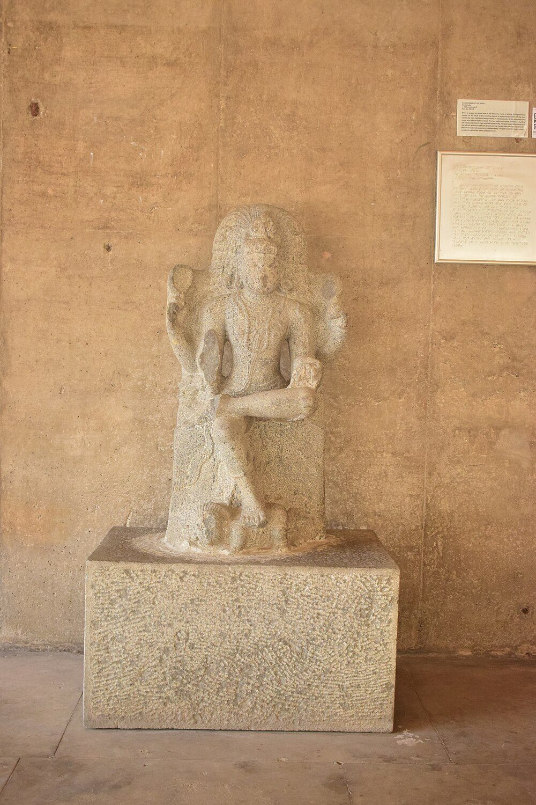
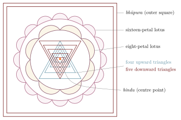

Chapter 9: The Sectarian Upaniṣads¶
9.1 Introduction: Upaniṣads of the Devotional Traditions¶
Among the 108 Upaniṣads of the Muktikā canon, a large number are associated with particular devotional traditions (sampradāyas). These are the so-called “sectarian” Upaniṣads: texts devoted to Śiva (Śaiva Upaniṣads, about fourteen in the conventional grouping), to Viṣṇu (Vaiṣṇava Upaniṣads, also about fourteen), and to the Goddess (Śākta Upaniṣads, about eight or nine), with a few devoted to Gaṇeśa and Sūrya. The designation “sectarian” is a scholarly convention and is not meant pejoratively. These texts show how the devotional traditions claimed Upaniṣadic authority for their theologies by composing works in the Upaniṣadic form, often borrowing phrases from the principal Upaniṣads and identifying their chosen deity with Brahman.
Their dates must be kept in view. With a few exceptions — the Mahānārāyaṇa that forms the tenth book of the Taittirīya Āraṇyaka (a different text from the Atharvavedic Mahānārāyaṇa of the Muktikā list), and possibly the Atharvaśiras, Kaivalya and Nṛsiṃhatāpanīya, which may belong to the first millennium CE — the sectarian Upaniṣads were composed in the medieval and early modern periods, many of them between about the tenth and the seventeenth centuries. Several reflect the theology of particular medieval schools: the Rāmatāpanīya that of the Rāmānandī tradition, the Gopālatāpanī that of Kṛṣṇa devotion in Braj, and the Śākta Upaniṣads that of Śrīvidyā Tantra. The numbers and the Vedic allocations given below follow the conventional grouping of the Muktikā list, which itself varies between editions. Many of them are known in the form transmitted in the South Indian collection of the 108, and they were commented on as a body by Upaniṣadbrahmayogin in the eighteenth century (Section 11.8).
9.2 The Śaiva Upaniṣads¶
9.2.1 Overview¶
The Śaiva Upaniṣads identify the supreme Brahman with Śiva (Maheśvara, Rudra). Their oldest Upaniṣadic model is the Śvetāśvatara, which already names the one God Rudra and Śiva (Section 4.6); several of them also draw on the Śatarudrīya, the litany to Rudra of the Yajurveda (Table 9.1).
| Upaniṣad | Veda | Key Teaching |
|---|---|---|
| Kaivalya | Kṛṣṇa Yajurveda | Kaivalya (liberation) through knowledge of Śiva |
| Atharva-Śiras | Atharvaveda | Śiva as the supreme deity; the meaning of Rudra |
| Atharva-Śikhā | Atharvaveda | Meditation on Oṃ; Śiva (Īśāna) as its object |
| Bṛhajjābāla | Atharvaveda | Vibhūti (sacred ash); Rudra as Brahman |
| Rudra-Hṛdaya | Kṛṣṇa Yajurveda | The heart of Rudra; Śiva-Śakti non-duality |
| Dakṣiṇāmūrti | Kṛṣṇa Yajurveda | Śiva as the primordial Guru |
| Pañcabrahma | Kṛṣṇa Yajurveda | Five faces/aspects of Śiva |
| Akṣamālikā | Ṛgveda | The rosary (akṣamālā) in Śaiva worship |
9.2.2 The Atharvaśiras and the Pāśupatas¶
The Atharvaśiras (“Head of the Atharvaveda”) is probably among the oldest of the Śaiva Upaniṣads. A text of that name is already listed among purificatory recitations in the Dharmasūtras, though whether it is the work that survives cannot be proved. It opens with the gods going to Rudra’s world and asking him, “Who are you?” Rudra answers that he alone was in the beginning, is and will be, and that there is nothing apart from him; he then identifies himself with every god, every direction, every Veda and every element. The text goes on to explain Oṃ and the names of Rudra, and closes with an observance: the worshipper smears his body with ash while reciting that fire, wind, water, earth and space are ash.
This “Pāśupata observance” (pāśupata-vrata) links the Upaniṣad with the Pāśupatas, the oldest Śaiva ascetic order known from inscriptions and texts, who traced their teaching to Lakulīśa. Alexis Sanderson, in his survey of the Śaiva traditions, places the Pāśupatas in the “outer path” (atimārga) of ascetics who sought liberation through observances of ash-bathing, chanting and deliberately provocative behaviour, as distinct from the later tantric Śaivism of initiated householders (Sanderson 1988). The Atharvaśiras shows one way in which such a tradition could claim Vedic standing: by composing an Upaniṣad in which Rudra is the Brahman of the older texts. The related Atharvaśikhā, which teaches meditation on Oṃ with Śiva (Īśāna) as its object, and the Bṛhajjābāla and Bhasmajābāla, which are largely about sacred ash, continue the same concerns.
9.2.3 The Kaivalya Upaniṣad¶
The Kaivalya Upaniṣad is the most widely read of the Śaiva Upaniṣads and the closest in doctrine to the classical texts. Brahmā teaches the sage Āśvalāyana that liberation (kaivalya) is attained not by works, offspring or wealth but by renunciation, faith, devotion and meditation, and that the one to be known is Śiva, identical with the Ātman within:
sa eva sarvaṃ yad bhūtaṃ yac ca bhavyaṃ sanātanam
jñātvā taṃ mṛtyum atyeti nānyaḥ panthā vimuktaye
Translation: “He alone is everything — what was, what will be, the eternal. Knowing Him, one crosses beyond death. There is no other path to liberation.”
— Kaivalya Upaniṣad 9
The second line echoes the Śvetāśvatara (3.8; Section 4.6.6), and the text as a whole is a mosaic of phrases from the principal Upaniṣads, which is one reason Advaitins valued it.
9.2.4 The Dakṣiṇāmūrti Upaniṣad¶
This Upaniṣad presents Śiva in his form as Dakṣiṇāmūrti — the south-facing deity who is the primordial teacher (ādi-guru). In the iconography and hymns associated with this form (above all the Dakṣiṇāmūrti-stotra attributed to Śaṅkara), Śiva sits under the banyan tree, a young teacher surrounded by aged disciples, and teaches the highest truth through silence: the silence itself is the teaching, a statement that ultimate truth transcends verbal expression (Figure 9.1).


9.3 The Vaiṣṇava Upaniṣads¶
9.3.1 Overview¶
The Vaiṣṇava Upaniṣads identify Brahman with Viṣṇu (Nārāyaṇa) or with his incarnations, particularly Nṛsiṃha, Rāma and Kṛṣṇa. Several of them were used by the Śrīvaiṣṇava and Gauḍīya Vaiṣṇava traditions (Table 9.2). Two texts with similar names must be kept apart. The Nārāyaṇa Upaniṣad of the Muktikā list is a short Kṛṣṇa Yajurvedic text. The Mahānārāyaṇa of the same list is assigned to the Atharvaveda and is identified with the later Tripādvibhūti-Mahānārāyaṇa. Both differ from the older Mahānārāyaṇa, the tenth book of the Taittirīya Āraṇyaka, which Deussen counted among the verse Upaniṣads (Section 1.12) and on which Rāmānuja relied (Section 11.12.2).
9.3.2 The Nṛsiṃha-Tāpanīya Upaniṣad¶
The Nṛsiṃha-Tāpanīya is historically the most important of the Vaiṣṇava Upaniṣads, because it shows a mantra-based devotional text being fused with the Advaita reading of the Māṇḍūkya. It has two parts. The Pūrva (earlier) part is devoted to the “king of mantras” (mantra-rāja) of Nṛsiṃha, a thirty-two-syllable verse in anuṣṭubh metre: its divisions, its seed syllables, the diagram in which it is to be installed and the fruits of reciting it.
The Uttara (later) part turns from ritual to doctrine. It takes up the Māṇḍūkya’s analysis of the syllable Oṃ and the four quarters of the self (Section 3.2) and declares that the self in its fourth, non-dual state is Nṛsiṃha himself. The man-lion who in myth bursts from a pillar to destroy the demon Hiraṇyakaśipu becomes the Turīya of the Māṇḍūkya, and the devotee’s mantra becomes a means to the knowledge that the self is Brahman. The text uses the non-dualist vocabulary of Gauḍapāda’s Kārikā and is generally taken to presuppose both the Māṇḍūkya and Gauḍapāda; it is therefore unlikely to be older than the second half of the first millennium CE. Deussen included both parts in his Sixty Upaniṣads (Deussen 1897). Advaitins valued the work highly, and a commentary on its first part is ascribed to Śaṅkara, though the ascription is doubted. For the history of the Upaniṣads it is a clear case of what this chapter describes: a sectarian deity identified, through the vocabulary of the principal Upaniṣads, with the Brahman they teach.
9.3.3 The Rāma- and Gopāla-Tāpanīya Upaniṣads¶
The Rāma-Tāpanīya, modelled on the Nṛsiṃha text, does the same for Rāma: it expounds the six-syllable Rāma mantra and identifies Rāma with Brahman and with the syllable Oṃ. It was valued in the Rāmānandī tradition of north India.
The Gopāla-Tāpanīya Upaniṣad is important for the Kṛṣṇa-bhakti traditions, particularly the Gauḍīya Vaiṣṇava sampradāya of Caitanya (1486–1534), whose theologians, notably Jīva Gosvāmī, quote it extensively. It identifies the cowherd Kṛṣṇa of Vṛndāvana with the Supreme Brahman and presents the eighteen-syllable Kṛṣṇa mantra. The Gauḍīya doctrine that Kṛṣṇa is not merely an incarnation of Viṣṇu but svayaṃ bhagavān, the original form of the Godhead, rests chiefly on the Bhāgavata Purāṇa (1.3.28), with the Upaniṣad cited in support.
9.4 The Śākta Upaniṣads¶
9.4.1 Overview¶
The Śākta Upaniṣads identify Brahman with the Goddess (Devī, Mahāśakti). Most of them belong to the Śrīvidyā tradition, the tantric worship of the Goddess as Tripurasundarī, and they give that tradition a Vedic warrant (Table 9.3). The Kena’s Umā Haimavatī, who reveals Brahman to the gods, was read by Śākta commentators as their earliest Upaniṣadic witness (Section 2.2).
| Upaniṣad | Veda | Key Teaching |
|---|---|---|
| Devī | Atharvaveda | Devī as the Supreme; the cosmic Goddess |
| Tripurā-Tāpinī | Atharvaveda | Tripurasundarī; the Śrī Vidyā tradition |
| Saubhāgya-Lakṣmī | Ṛgveda | Lakṣmī as the auspicious power of Viṣṇu |
| Sarasvatī-Rahasya | Kṛṣṇa Yajurveda | Sarasvatī as the power of knowledge |
| Bhāvanā | Atharvaveda | Meditations on the Goddess; Śrī Cakra |
| Sītā | Atharvaveda | Sītā as the Supreme Śakti |
| Annapūrṇā | Atharvaveda | The Goddess as the giver of food/sustenance |
9.4.2 The Devī Upaniṣad¶
The Devī Upaniṣad (also known as Devī Atharva-Śīrṣa), a medieval text widely recited with the Devīmāhātmya, is the best known of the Śākta Upaniṣads. It opens with the gods asking the Great Goddess: “Who are You?” — the same question the gods put to Rudra in the Atharvaśiras. She answers:
ahaṃ brahmasvarūpiṇī / mattaḥ prakṛti-puruṣātmakaṃ jagat / śūnyaṃ cāśūnyaṃ ca
Translation: “I am the form of Brahman. From me (emanates) the world, composed of Prakṛti and Puruṣa — both the void and the non-void.”
— Devī Upaniṣad 1–2
The Devī Upaniṣad goes on to identify the Goddess with the principal Upaniṣadic categories — Brahman, Ātman, Sat-Cit-Ānanda, the Mahāvākyas, and Oṃ. She is at once transcendent and immanent, formless and possessed of all forms.
9.4.3 The Tripurā-Tāpinī and the Śrīvidyā Upaniṣads¶
The Tripurā-Tāpinī Upaniṣad belongs to the Śrīvidyā tradition and centres on the worship of the Goddess Tripurasundarī. It presents her as Brahman, sets out her mantra — the Śrīvidyā of fifteen syllables — and the diagram in which she is worshipped, the Śrī Cakra or Śrī Yantra (Figure 9.2), and it gives an esoteric exegesis of Vedic material, including the Gāyatrī, in Śrīvidyā terms. It ends, like the Nṛsiṃha text, by making the worship a path to non-dual knowledge. Two shorter texts complete the picture. The Ṛgvedic Tripurā Upaniṣad expresses the tradition’s doctrine in cryptic verses, and the Bhāvanā Upaniṣad teaches an inner worship in which the practitioner identifies the parts of the Śrī Cakra with the parts and faculties of the body. Both were commented on in the eighteenth century by Bhāskararāya, the leading theologian of the Śrīvidyā, who used them to argue that his tradition was Vedic and not merely tantric. Douglas Brooks’s studies of the Śrīvidyā show how much of the tradition’s self-understanding rests on this claim (Brooks 1990).

9.5 The Gaṇapati, Sūrya and Sāvitrī Upaniṣads¶
Beyond the three major sectarian groups, the Muktikā canon includes Upaniṣads devoted to Gaṇapati (Gaṇeśa) and to the Sun (Table 9.4). The Gaṇapati Upaniṣad (also called Gaṇapati Atharva-Śīrṣa), a late text probably of the sixteenth or seventeenth century and associated with the Gāṇapatya cult of Maharashtra (Courtright 1985), identifies Gaṇapati with the non-dual Brahman: tvaṃ brahmā tvaṃ viṣṇus tvaṃ rudras tvam indras tvam agnis tvaṃ vāyus tvaṃ sūryaḥ — “Thou art Brahmā, thou art Viṣṇu, thou art Rudra, thou art Indra, thou art Agni, thou art Vāyu, thou art Sūrya.” It is today among the most widely recited devotional texts in western India. It shows that the Upaniṣadic identification of all deities with the one Brahman could be applied to any member of the pantheon: the elephant-headed god of obstacles, learning and beginnings becomes the cause of creation, preservation and dissolution.
The Sūrya Upaniṣad, also in the “Atharvaśīrṣa” form, identifies the Sun with Brahman and with the self of all that moves and is still, takes up the Gāyatrī verse addressed to Savitṛ, and gives an eight-syllable mantra of the Sun. The Sāvitrī Upaniṣad of the Sāmaveda is a short text of correspondences in the old style: Savitṛ and Sāvitrī are fire and earth, Varuṇa and the waters, wind and space, and so on through a series of male and female pairs, and the Gāyatrī (also called Sāvitrī) is interpreted through them. It closes with the two spells called Balā and Atibalā, which in the Rāmāyaṇa Viśvāmitra teaches to Rāma.
| Upaniṣad | Deity | Key Teaching |
|---|---|---|
| Gaṇapati Atharva-Śīrṣa | Gaṇeśa | Gaṇapati is the Supreme Brahman; the bīja-mantra Gaṃ as the seed of all creation |
| Sūrya Upaniṣad | Sūrya | The Sun as the visible form of Brahman; the Gāyatrī mantra as the path to liberation |
| Sāvitrī Upaniṣad | Savitṛ and Sāvitrī | The divine creative power; meditation on the solar deity and the Sāvitrī verse |
9.6 Common Framework and Theological Pluralism¶
Despite their different deities, the sectarian Upaniṣads share a framework. Each identifies its chosen deity with Brahman: Śiva, Viṣṇu or the Goddess is declared to be the non-dual, all-pervading, self-luminous reality of the principal Upaniṣads, and the deity is identified with the “That” of tat tvam asi. Each joins the path of knowledge (jñāna-mārga) of the older texts with the devotion (bhakti) of its tradition. And each gives mantras, diagrams, meditations and observances (upāsanā) for the worship of its deity — in this respect the sectarian texts stand closer to the ritual meditations of the oldest Upaniṣads (Section 4.3) than the philosophical summaries usually suggest.
The existence of Śaiva, Vaiṣṇava and Śākta Upaniṣads, each declaring its deity to be the supreme Brahman, raises the question of theological pluralism, to which three answers were given:
-
The Advaita response: all sectarian Upaniṣads teach the same non-dual Brahman under different names. The names and forms (nāma-rūpa) differ, but the reality they point to is one — an application of the Ṛg-Vedic verse ekaṃ sad viprā bahudhā vadanti (“The One Being, the wise call by many names”, Ṛgveda 1.164.46). Upaniṣadbrahmayogin’s commentary on the whole collection takes this line.
-
The sectarian response: this is the position of most of the sectarian texts themselves. Each tradition claims that its deity is truly supreme and that the other deities are subordinate manifestations. The Śaiva tradition regards Viṣṇu as a form of Śiva; the Vaiṣṇava tradition regards Śiva as a devotee of Viṣṇu.
-
The inclusive response: the supreme reality encompasses all divine forms. Śiva, Viṣṇu and the Goddess are aspects of one undivided Absolute, as in the Purāṇic scheme in which Brahmā, Viṣṇu and Maheśvara represent creation, preservation and dissolution — three functions of one being.
9.7 Beyond the Sectarian Groups: The Sāmānya Vedānta Upaniṣads¶
The modern classification of the 108 (Figure 1.2) has one further group that is neither sectarian nor devoted to yoga or renunciation: the “general Vedānta” (sāmānya-vedānta) Upaniṣads. The grouping goes back to the Adyar Library editions and translations of the minor Upaniṣads published in the early twentieth century, which divided the non-principal texts of the Muktikā list into Yoga, Sannyāsa, Śaiva, Vaiṣṇava, Śākta and “general” volumes; later scholars, including Olivelle in his work on the Sannyāsa Upaniṣads (Olivelle 1992), have used the same divisions. The group is a residual category, and its membership varies, but it includes texts such as the Subāla, Paiṅgala, Adhyātma, Nirālamba, Sarvasāra, Mahā, Vajrasūcī and Muktikā itself. Most are medieval, and most are doctrinal summaries rather than records of dialogue.
A few of them matter beyond their group:
-
The Subāla gives a cosmogony and a long account of the self dwelling within every element and faculty, ending with the declaration that the inner self of all beings is “the one divine God, Nārāyaṇa”. Rāmānuja cites it as scripture for his doctrine that the world is the body of Brahman (Section 11.12.2).
-
The Paiṅgala, a dialogue between Yājñavalkya and his pupil Paiṅgala, is a compact manual of Advaita: the emergence of the world from māyā, the three bodies, the five sheaths, the analysis of the mahāvākyas, and the condition of the liberated. It shows the doctrines of Chapters 5 and 6 in the form of an Upaniṣad.
-
The Mahā Upaniṣad contains, in its sixth chapter, the verse that ends “for the noble-minded the whole earth is one family” (vasudhaiva kuṭumbakam), a line also found in the Hitopadeśa and much quoted today.
-
The Vajrasūcī (“Diamond Needle”) asks who is truly a Brāhmaṇa. It rejects in turn the soul, the body, birth, learning and ritual acts as the criterion, and answers that a Brāhmaṇa is one who has directly known the self. A Buddhist work of the same title, ascribed (doubtfully) to Aśvaghoṣa, attacks caste by similar arguments. The Upaniṣad redefines the highest varṇa in spiritual terms; it does not call for the abolition of caste in social life, and it should not be read as evidence that the Upaniṣadic tradition rejected caste (Sections 4.5 and 8.11).
The general Vedānta group thus shows the same process at work as the sectarian groups. In the medieval period the Upaniṣad was a living genre: teachers of every school composed texts in its form to state their doctrines with the authority of revelation, and the canon of 108 was assembled from them.
Oṃ Śāntiḥ Śāntiḥ Śāntiḥ